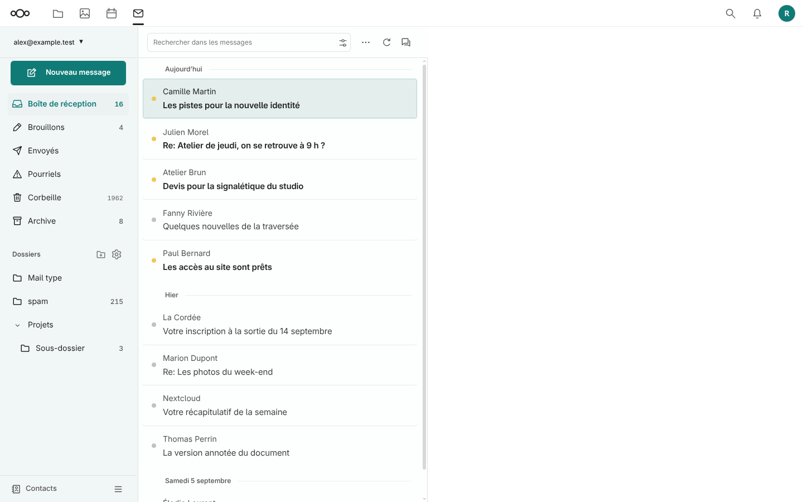

À partir de 1200 px, les messages n’affichent plus l’heure relative. Les en-têtes de jour gardent la chronologie et leur ligne remplace le séparateur du message précédent.

Ordinateur à 1440 px, messages fictifs.Mobile à 390 px : capture identique au pixel près à la version 1.7.15.